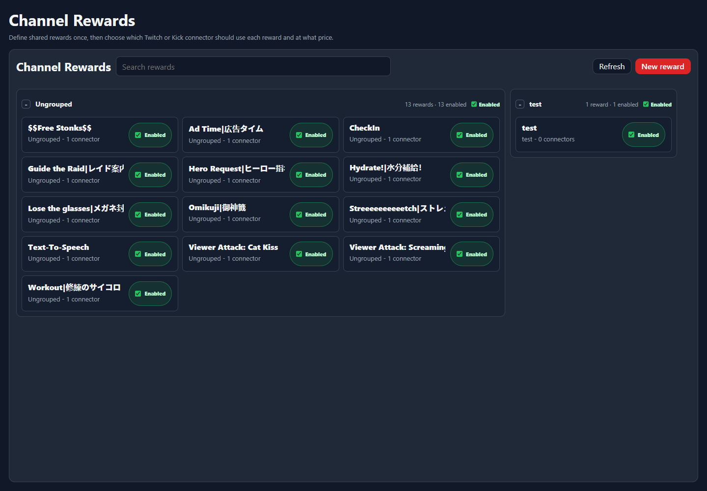

Setup Page
Channel Rewards
Channel Rewards lets you define shared reward ideas once, then connect them to Twitch or Kick connector reward settings.
Reward List

Rewards are managed as NekoBot definitions first. A reward can then be attached to the supported platform connectors that should expose it.
ControlWhat it does
New RewardCreates a shared reward definition.Reward nameThe viewer-facing reward title.Reward enabledControls whether this reward should be active.SaveStores the NekoBot reward definition and connector-specific reward settings.Connector Rewards
Connector Rewards is where a shared reward is mapped to Twitch or Kick connector instances, including the connector-specific price or sync behavior.
- Configure Connectors before expecting connector reward rows to appear.
- Use one shared reward when the same idea should exist on multiple platforms.
- Use connector-specific values when Twitch and Kick need different pricing or availability.
Sync
Sync pushes or refreshes the reward state for a supported connector. Use it after saving a reward when the platform-side copy needs to be created or updated.
Reward-triggered behavior is handled through Command Triggers, which can bind the reward event to overlay boxes or actions.